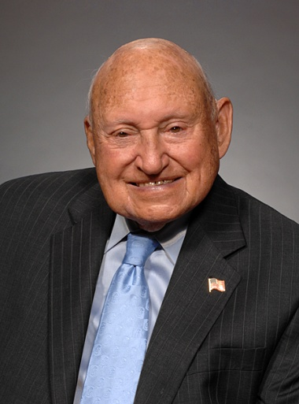
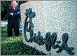

S.
Truett Cathy
Running Head: Chic-Fil-A
The S. Truett Cathy Leadership Style
Robert D. Majewski
Lakeland College
The S. Truett Cathy Leadership Style
S. Truett Cathy is a unique man, a great leader, and an example for all leaders to emulate. He is the founder of Chick-fil-A restaurants. He started the company in 1967 and he has operated the company using Biblical principles. One of the things for which Chick-fil-A is best known for is being closed on Sundays.
Cathy started out in the restaurant business in May of 1946 with his brother, Ben. They opened up the Dwarf Grill in Hapeville, Georgia. His brother, Ben, died in 1949 and he bought the rest of the business from Ben’s wife. The restaurant was renamed to the Dwarf House. Goode Brother Poultry Company had scraps of boneless, skinless chicken and approached Cathy. He decided to play around with the scraps to see if he could find a way to use them. He came up with a seasoned sandwich, which he called Chick-fil-A. The first store opened in 1967 at Greenbriar Mall in Atlanta. 
Since Cathy started out on his own, he had to perform all of the managerial roles. For the figurehead role, he is the CEO of Chick-fil-A. He forms joint ventures with independent operators instead of selling franchises. He also takes on the leader role. He meets with all potential operator candidates. He looks at the commitment to the operators as he would a marriage. He makes sure to pick them carefully. He spends a lot of time training the operators and they end up being very loyal to him. He looks at Chick-fil-A as extended family. The liaison role is also part of what Cathy does. He believes in service to others. He has been a mentor to young people for half a century. Many of the kids he mentors end up working in careers at Chick-fil-A. He believes in community service. He uses his role to train up young people and be a role model. 
The informational role has three parts. The monitor role is one of the key areas. Cathy meets with all the leadership at Chick-fil-A. Through his internal meetings, they were able to focus on their purpose. Their purpose statement is, “That we might glorify God by being a faithful steward in all that is entrusted to our care, and that we might have a positive influence on all people that we might come in contact with (ChristiaNet).” The disseminator role is important to Cathy. Whenever he makes a business decision, he looks at how it will affect his extended Chick-fil-A family. He is very loyal to his employees. Like every CEO, he communicates quality and customer satisfaction. Cathy also handles the spokesperson role. He is the leader of this organization since they never went public. By keeping it in the family, he is able to control the growth. He is also able to make sure the stores stay closed on Sunday. He will not compromise on this area. He also is a spokesperson for the organization. He has written two books and many interviews on his leadership ideals.
The decisional roles played a big part in the early development of the Chick-fil-A organization. The entrepreneur role helped Cathy develop a product that many consumers love and continue to enjoy. He developed the sandwich that the company is founded on. The disturbance-handler role was also important early on. Many obstacles had to be resolved for Cathy to be where he is today. They were trying to start their first restaurant immediately after World War II. There were shortages of nails, lumber, and meat. Cathy and his brother had to use nails that they found and straightened, then locate some used lumber, and a special deal had to be made with another local restaurant to provide meat. All of this had to be done to get things rolling. The resource-allocator role was used while trying to scrounge up the money to start the business and trying to determine the growth path. Cathy quickly determined that the Chick-fil-A stores needed to be located in malls to keep the costs down. He was able to get the first store going for $17,000. He decided to keep expanding and it took seventeen stores before he started making money. The negotiator role is the last of the decisional roles. Cathy is the owner of the business so he can do what he wants with his company. He has negotiated many things over his long career. Since he puts other people before himself, he negotiates fairly and people respect him. He has many employees and customers who are extremely loyal to him. This role is easy because of the principles he has chosen to live his life by.
Which managerial role is Cathy’s biggest strength? The leader role is where the loyalty is engrained in the operators and everyone else who spends time with him. He definitely influences people. He has developed Christian principles in the lives of many young people. The entrepreneurial role is also a strength. He has managed to come up with a unique advertising campaign, which uses cows to sell chickens. He has not changed this strategy because it is still working.
Of the three levels of analysis of leadership theory, Cathy operates at the individual level. There is a distinct relationship between Cathy and each individual at the operator level at Chick-fil-A. He also desires to make a difference in the lives of every employee, customer, and the community. He does not open his stores on Sunday to allow employees to spend time with their families. This has also attracted a high quality employee work force. He also believes in a servant style leadership. He runs his business using biblical principles. Because he operates at the individual level, employees are very loyal.
The behavior leadership theory is most relevant when examining Cathy’s leadership style. He leads by example. When his business was faltering, he took a pay cut to avoid having to lay off employees and affect their families. Every employee is treated with respect. Employees love to go to work and customers are noticing that. The main purpose is to impact lives on both sides of the counter and the profits will be there.
The Big Five Model of Personality traits are surgency, agreeableness, adjustment, conscientiousness, and openness to experience. Which of these traits exemplify Cathy? Cathy does have surgency. He has specific ideas on how he wants Chick-fil-A to be managed. He does not compromise on these ideals. His main goal is not competing but influencing people. He also has strong agreeable personality behavior. He puts other people ahead of himself and genuinely cares. He has chosen this life style. His decisions consider other peoples’ situations. The adjustment trait has to do with emotional stability. He has a tremendous desire to be a model citizen and an example to the people he mentors. Self-control is one of the many character traits the Bible addresses. To influence others positively, self-control is a requirement. He has been teaching Sunday school for half a century. He has influenced many lives. Cathy also has conscientiousness as a trait. He gets things done. Running an operation requires hard work to get things accomplished. Cathy is not afraid of hard work. When he opened his first restaurant with his brother, it was open 24 hours. They each worked a 12-hour shift Monday through Saturday. He also has many goals for the community. He has awarded over 16,000 employees company scholarships. Openness to experience is being willing to try new things. When Cathy started out, he tried something new. His leadership style is something different to many in the business community. Now that he has been successful with his current business plan for so long, he has not changed much. It seems as though he will continue with what works, like his advertising campaign (uses cows to sell chickens). His concepts are very different. He is very successful, so why change.
What traits does Cathy have as an effective leader? Cathy definitely has the dominance trait. He likes to be able to control the inner workings of the business. He wants the company to stay on the path of applying the biblical principles it started with. He had the opportunity to sell off the business but decided that he needed to stay in control to make sure the employees were taken care of properly. He could have walked away a very rich man at the time. He definitely started the business with high energy. He put in many hours getting the business off the ground. He is still very involved even though he is in his eighties. He also is a very positive person. He did not give up when obstacles were put in his path. Integrity is his biggest strength. He is very concerned about the welfare of his employees. He has done things that have hurt him financially to refrain from hurting his employees. In tough times during the early 1980’s, he did not take a salary when times were hard, so he did not have to lay people off. How refreshing is that? He truly lives by the servant principles taught in the Bible. Because of his integrity, he has a very loyal workforce. His employee turnover is very low. Another trait Cathy possesses is sensitivity to others. He has influenced many lives over his lifetime. Whether through Sunday school, scholarships, mentoring young people, or his company succession plans, he is always trying to influence people’s lives for the better. The other traits of an effective leader are flexibility, intelligence, locus of control, stability, and self-confidence. Cathy possesses these traits though they probably did not have the greatest impact on his success.
How does the Achievement Motivation Theory apply to Cathy? Like all of us, he has the need for achievement, need for power, and need for affiliation. The dominant trait is the need for achievement. He is always striving to make life better for those around him. He is not afraid of hard work and gets things done. This trait can be compared to the Big Five trait of conscientiousness. He takes the welfare of his employees personally.
Does Cathy have Leader Motive Profile? He has a high need for achievement, a moderate need for socialized power, and a moderate need for affiliation. He does not have Leader Motive Profile since his need for achievement is higher than his need of power.
Attitude is important to leaders. Positive attitudes are a good predictor of job performance. Cathy can be described as a Theory Y leader. He has a very positive or optimistic view of his employees and of life in general. He trusts his employees and that in turn can motivate them. He enjoys going to work. Cathy also has a good self-concept. He has quite a list of accomplishments, has gone through many trials, and came out on top. He chose to manage his business using principles from the Bible and has proven over his lifetime that the principles work. He considers himself a role model for young people.
Does ethical behavior pay? Cathy’s net worth is estimated to be around $1.5 billion. His level of moral development is postconventional. He has stuck to his principals even when it was painful to do so. He promised operators a new Ford car for a year if they met certain objectives. He had to give away 46 Lincolns during a tough year. He is a man of integrity and does the right thing for the employees. His uses a servant leadership style with the Bible as the standard. He treats others, as he would like to be treated. Cathy would think that ethical behavior pays.
The University of Iowa came up with two basic leadership styles. Cathy falls under the democratic leadership style. He puts an operator in charge of each store. They are the responsible owners of that business. Operators are only allowed one store so they will be there full time to make sure the business succeeds. This helps the building of relationships with loyal customers and employees. He does not need to supervise by doing it this way.
The University of Michigan Leadership Model makes a determination between job-centered and employee-centered behavior. Cathy uses the employee-centered leadership style. Every decision is made with the employee relationship in mind. The employee relationship is the main concern. This concern for employees has earned the trust and respect that the employees have for Cathy.
The Ohio State University Leadership Model has four leadership styles. High consideration and low structure would fit Cathy’s style. He lets the operators run each store and builds relationships. He is a good communicator and shares the decision-making responsibility with the operators.
The Leadership Grid theory looks at the concern between production and people. Which one of the five best fits Cathy? The country-club leader would be the best fit. He believes that if you take care of the employees, the profits will take care of themselves. He does not worry about the profits. He puts the people first. He expects good performance because of the way he handles his employees. He treats them is if they are family.
Motivation of employees is a key component to the success of any business. What does Cathy do to motivate employees? The first motivation is in how the store is set up. Dobrzynski states,
Chick-fil-A's operators, who are not franchisees, put up just $5,000, a tiny fraction of the cash required by fast-food chains for a franchise. The risk falls on Chick-fil-A, which owns or leases the stores, rents them to operators, collects 15 percent of sales, then splits the profits 50-50. Chick-fil-A guarantees operators an income of at least $30,000.(Dobrzynski, 1996)
The $30,000 base pay helps with meeting the lower levels in the hierarchy of needs. A store operator can earn more than $100,000. Regular hourly employees earn wages comparable to other fast food places and long term hourly employees can receive college scholarships. Dobrzynski also reports, “He motivates them in part with the use of cars or vacation condos. He also pays for his operators, full-time headquarters employees and all their spouses to attend a five-day meeting each February -- this year in Bermuda (Dobrzynski, 1996).” They also supplied benefits for operators and salaried workers. The type of motivation characterized here fits the expectancy theory. The performance objectives for the operators and salaried employees are clearly defined. Different levels of performance are rewarded accordingly. The employee will find value in the award types that are offered. The employee has to know that you will do what you say you will do. The Pygmalion effect has to be applied also. This means that when you set higher expectations, the employee will raise their performance to try to meet the higher expectations. This is motivating with positive reinforcement. When this type of reinforcement is used both the employer and the employee win.
Chick-fil A has a succession plan that has Cathy’s children taking over the company after he leaves the business. The children are being mentored to run the business using the same principles that have been successful to this point. They do not see a reason to change things. If I had to do it all over again, I would not mind working for this company. The use of the Bible as guidance for running a company makes sense. The principles from the Bible have value in individual lives; why not apply them in the business world? The goal is to glorify God and this business does.
References
CFA Properties. (2009). S. Truett Cathy. Retrieved June 21, 2010, from http://www.truettcathy.com/photos.asp
ChristiaNet. Chick-fil-A ceo, S. Truett Cathy. Retrieved June 21, 2010, from
http://christiannews.christianet.com/1097585115.htm
Dobrzynski, J. (1996 April). Chicken done to a golden rule; fast-food chain treats its employees
as family. The New York Times. Retrieved June 23, 2010, from
Hattwick, R. (2005 March). The Chick-fil-A story. Retrieved June 21, 2010, from
http://www.anbhf.org/pdf/truett_cathy.pdf
Hyatt, J. (2003 February). Managing by the good book in this age of underhanded ceos, is it
possible to be too righteous?. CNNMoney.com. Retrieved June 21, 2010, from
http://money.cnn.com/magazines/fsb/fsb_archive/2003/02/01/336850/
Jacobs, D. (2004 April). Truett to his word. Smart Business Atlanta. Retrieved June 21, 2010,
from http://www.sbnonline.com/Local/Article/5854/66/0/Truett_to_his_word.aspx
Kennedy, J. (2005 February). Peddling chicken, inspiring people. Georgia Magazine. Retrieved
June 21, 2010, from
http://georgiamagazine.com/archives_view.asp?mon=2&yr=2005&ID=1057
Montero, L.. (2009 February). “Eat mor chikin, inspire more people,” by Truett Cathy.
Retrieved June 21, 2010, from
Schmall, E. (2007July). The cult of Chick-fil-A. Retrieved June 23, 2010, from
http://www.forbes.com/forbes/2007/0723/080.html
Hyatt, J. (2003 February). Managing by the good book in this age of underhanded ceos, is it
possible to be too righteous?. CNNMoney.com. Retrieved June 21, 2010, from
http://money.cnn.com/magazines/fsb/fsb_archive/2003/02/01/336850/